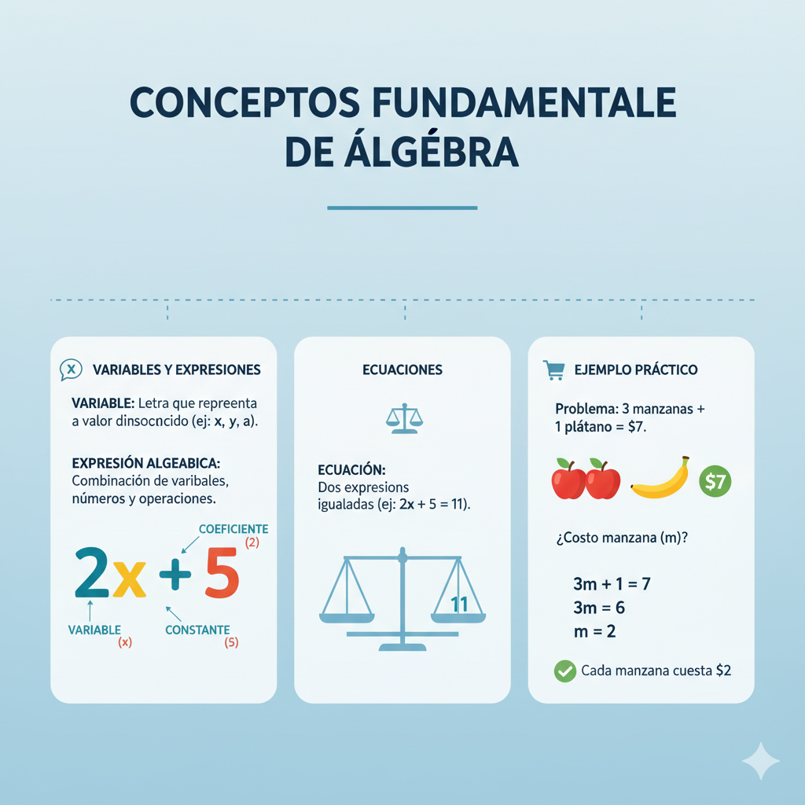
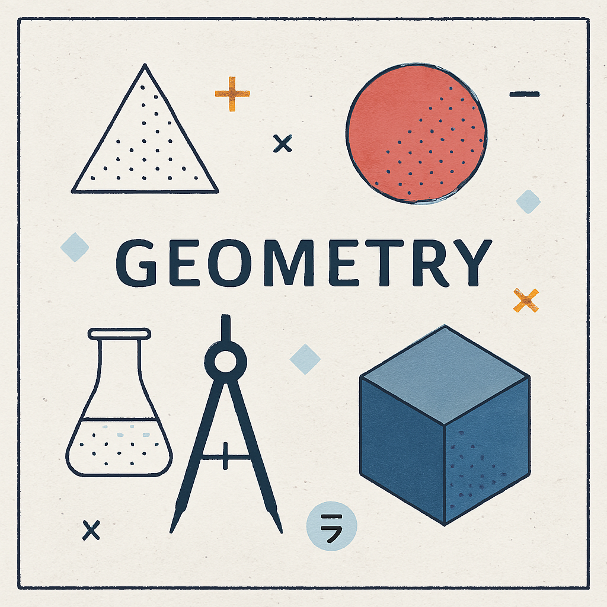
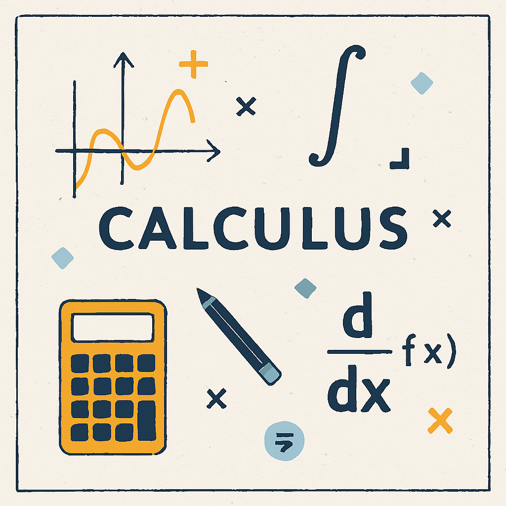

Álgebra
El álgebra es la rama de la matemática que estudia las relaciones entre cantidades usando símbolos, generalmente letras, para representar números desconocidos o variables. A diferencia de la aritmética, que trabaja solo con números específicos, el álgebra nos permite generalizar y resolver problemas de forma más abstracta. El álgebra utiliza variables (letras como x, y, z) para representar valores desconocidos. Las expresiones algebraicas combinan estas variables con números y operaciones (suma, resta, multiplicación, división). Las ecuaciones son igualdades que contienen variables y nos permiten encontrar el valor de estas variables. El objetivo principal es manipular estas expresiones siguiendo reglas matemáticas para resolver problemas y encontrar valores desconocidos.
Ejemplo práctico
Imagina que tienes dinero en tu bolsillo y alguien te da $5 más. Ahora tienes $23 en total. ¿Cuánto dinero tenías al principio?
En álgebra, planteamos la ecuación:
x + 5 = 23
Donde x representa el dinero que tenías inicialmente.Resolvemos restando 5 de ambos lados:
x + 5 - 5 = 23 - 5
x = 18
Verificación: 18 + 5 = 23 ✓
Por lo tanto, tenías $18 al principio. Este es un ejemplo simple de cómo el álgebra nos permite encontrar valores desconocidos planteando y resolviendo ecuaciones.
Geometría
La geometría es la rama de la matemática que estudia las formas, figuras, espacios y las propiedades de los objetos en el plano (dos dimensiones) y en el espacio (tres dimensiones). Analiza características como tamaño, forma, posición, distancia y ángulos. La geometría trabaja con elementos fundamentales como puntos (ubicaciones sin dimensión), líneas (sucesiones infinitas de puntos), planos (superficies bidimensionales), y figuras geométricas como triángulos, cuadrados, círculos y poliedros. También estudia propiedades como perímetro (contorno de una figura), área (espacio que ocupa), volumen (espacio que ocupa un objeto tridimensional) y ángulos (aberturas entre líneas).
Ejemplo práctico
Supongamos que tienes un terreno rectangular que mide 15 metros de largo y 8 metros de ancho.Necesitas conocer cuánto espacio ocupa ese terreno.
Fórmula del área de un rectángulo:
Área = largo × ancho
Aplicamos los datos:
Área = 15 m × 8 m = 120 m²
El terreno ocupa 120 metros cuadrados.
Otro cálculo: el perímetro (contorno del terreno):
Perímetro = 2(largo) + 2(ancho)
Perímetro = 2(15) + 2(8) = 30 + 16 = 46 metros
Para cercar completamente el terreno necesitarías 46 metros de cerca.
Cálculo
El cálculo es la rama de la matemática que estudia el cambio y el movimiento. Se divide en dos áreas principales: el cálculo diferencial (que estudia cómo cambian las cosas) y el cálculo integral (que estudia la acumulación). El cálculo es fundamental para analizar tasas de cambio, optimizar procesos y calcular áreas y volúmenes complejos.
Ejemplo práctico
Imagina un automóvil cuya posición en el tiempo se describe por la función: s(t) = 5t², donde s es la distancia en metros y t es el tiempo en segundos.
Pregunta: ¿A qué velocidad se mueve el automóvil en el instante t = 3 segundos?
Usamos la derivada:
La derivada de s(t) = 5t² es: s'(t) = 10t
Esta derivada representa la velocidad instantánea.
Evaluamos en t = 3:
s'(3) = 10(3) = 30 m/s
El automóvil se mueve a 30 metros por segundo en el instante t = 3 segundos.
Interpretación: La derivada nos permite conocer la velocidad exacta en un momento específico, algo que el cálculo diferencial hace posible. Sin el cálculo, solo podríamos calcular velocidades promedio en intervalos de tiempo, no instantáneas.